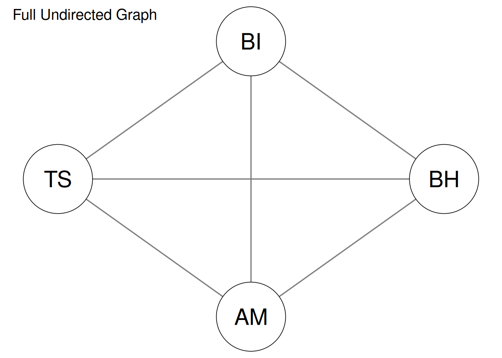
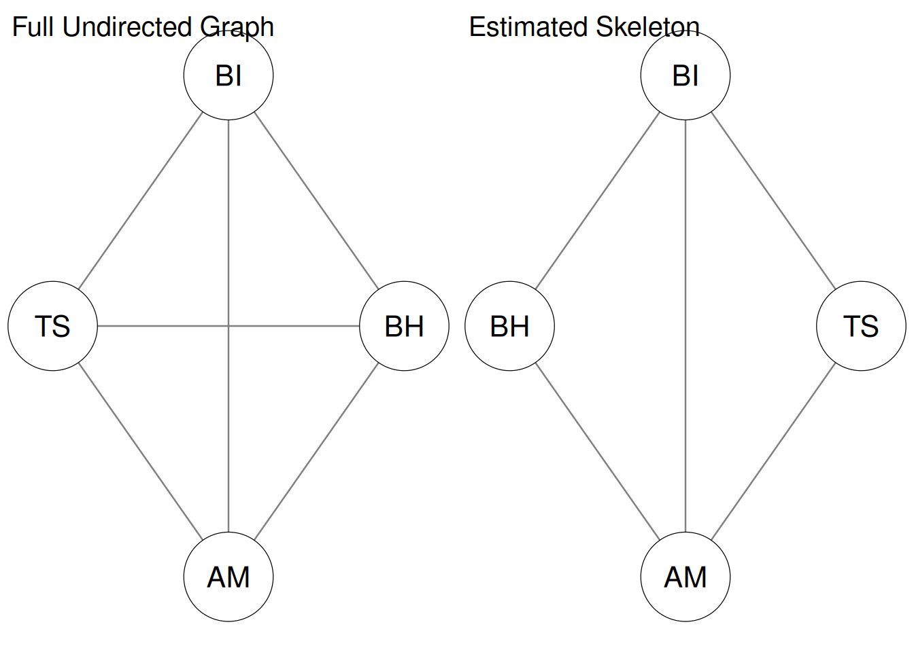
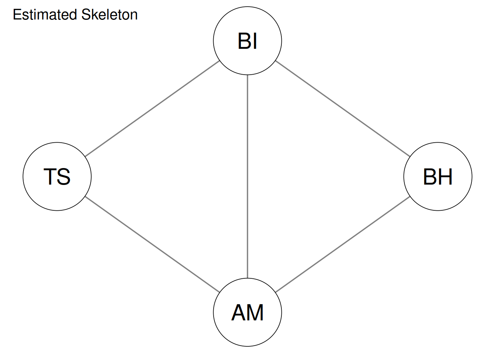
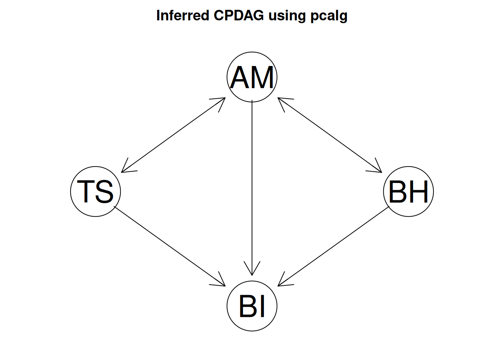
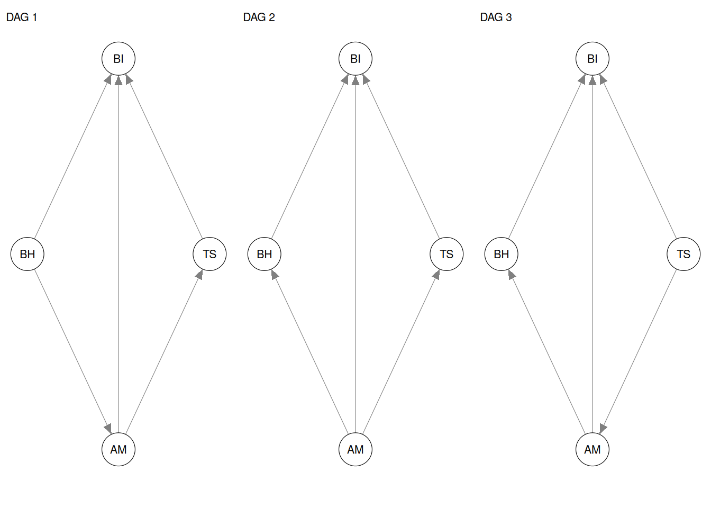
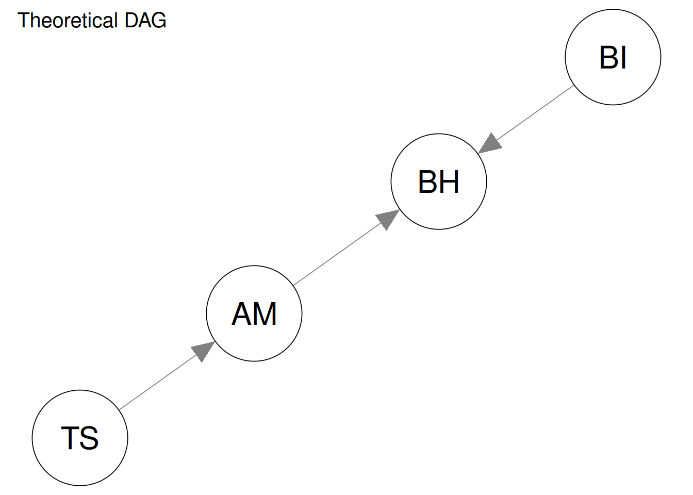

7 Causal Discovery
7.1 Weekly Readings
- Pearl, J. (2019). The seven tools of causal inference, with reflections on machine learning. Communications of the ACM, 62(3), 54–60. https://doi.org/10.1145/3241036
- Vowels, M. J. (2022). A Causal Research Pipeline and Tutorial for Psychologists and Social Scientists (Sections 1-4 and 9). arXiv. https://doi.org/10.48550/arXiv.2206.05175
7.2 Tutorial
In these exercises we will explore causal discovery methods based on conditional independence testing. This tutorial is also available in the file causal_discovery_zhao_2025.R in the patterns_principles_exercises project. We will use four constructs from the Zhao (2025) dataset throughout:
- AM: Autonomous motivation, as an operationlization of one of the fundamental needs.
- TS Teacher pressure (teacher stress), as an operationalization of “external events”
- BI: Behavioral intention, which we will interpret as an operationalization of integration.
- BH: Sports behavior, as a context-specific operationalization of healthy development.
Note that these variables are not perfect matches for the theoretical concepts, but for the purpose of a tutorial - that is fine.
All four variables are mean scores aggregated from their questionnaire items, with higher values indicating higher levels of the corresponding construct.
name type n missing unique mean median mode mode_value sd v min max
1 AM numeric 290 0 31 4.6 4.6 4.6 NA 1.4 NA 1 7
2 TS numeric 290 0 21 2.9 2.8 2.8 NA 1.1 NA 1 7
3 BI numeric 290 0 16 4.9 5.0 5.0 NA 1.3 NA 1 7
4 BH numeric 290 0 13 4.2 4.5 4.5 NA 1.4 NA 1 7
range skew skew_2se kurt kurt_2se
1 6 -0.43 -1.49 3.2 5.6
2 6 0.41 1.43 2.8 4.8
3 6 -0.48 -1.68 3.5 6.2
4 6 -0.22 -0.76 2.8 5.0 AM TS BI BH
AM 1.00 -0.25 0.51 0.3
TS -0.25 1.00 -0.31 -0.1
BI 0.51 -0.31 1.00 0.4
BH 0.30 -0.10 0.40 1.0Conditional-independence tests based on correlations and partial correlations, which assume that all relationships are linear with normally distributed noise. These assumptions are likely often violated with psychological data, so keep that in mind when interpreting the results.
7.2.1 Causal Discovery
In this exercise you will learn the basics of causal discovery, using the conditional independence method. You will apply the steps manually to understand the process, and then automate it using the `pcalg` package.
7.2.1.1 Enumerate all Possible Independence Tests
The first thing we’ll do is to test all possible marginal and conditional independence relations present in the data. Later, we use this information to constrain the possible DAGs.
With four variables, we need to test:
- all marginal associations;
- all conditional associations where we condition on one other variable; and
- all conditional associations where we condition on the two remaining variables.
We can construct these sets as follows:
# echo: true
# All unique combinations of four variables
marginal <- combn(vars, 2)
# For each of those combinations, condition on both of the two remaining variables separately
cond1 <- do.call(cbind, apply(marginal, 2, function(pair){
rbind(matrix(pair, ncol = 2, nrow = 2), setdiff(vars, pair))
}, simplify = FALSE))
# For each combination, condition on both remaining variables together
cond2 <- apply(marginal, 2, function(pair){
c(pair, setdiff(vars, pair))})
marginal [,1] [,2] [,3] [,4] [,5] [,6]
[1,] "AM" "AM" "AM" "TS" "TS" "BI"
[2,] "TS" "BI" "BH" "BI" "BH" "BH" [,1] [,2] [,3] [,4] [,5] [,6] [,7] [,8] [,9] [,10] [,11] [,12]
[1,] "AM" "AM" "AM" "AM" "AM" "AM" "TS" "TS" "TS" "TS" "BI" "BI"
[2,] "TS" "TS" "BI" "BI" "BH" "BH" "BI" "BI" "BH" "BH" "BH" "BH"
[3,] "BI" "BH" "TS" "BH" "TS" "BI" "AM" "BH" "AM" "BI" "AM" "TS" [,1] [,2] [,3] [,4] [,5] [,6]
[1,] "AM" "AM" "AM" "TS" "TS" "BI"
[2,] "TS" "BI" "BH" "BI" "BH" "BH"
[3,] "BI" "TS" "TS" "AM" "AM" "AM"
[4,] "BH" "BH" "BI" "BH" "BI" "TS"Each table captures unique relations in the columns.
Quiz
The first column of marginal gives us the bivariate independence relation
between:
The first column of cond1 conditions on:
The first column of cond2 conditions on:
How many unique independence relations does this give?
7.2.1.2 Test marginal and conditional independence
If we assume that all associations are linear and errors are normally distributed, then we can use correlations to test marginal independence and partial correlations to test conditional independence between these variables.
Remember that the null hypothesis for each test is that the two variables are independent. We use an alpha level of .10.
[1] 2.280825e-05[1] 0.07096407Quiz
AM is independent from TS
AM is independent from TS when conditioning on BI.
We can use the previously constructed tables to automate all tests:
# echo: true
# Marginal correlations
marg_p <- apply(marginal, 2, function(r) {
cor.test(df[, r[1]], df[, r[2]])$p.value })
# Conditional on one variable
c1_p <- apply(cond1, 2, function(r) {
pcor.test(df[, r[1]], df[, r[2]], df[, r[3]])$p.value })
# Conditional on both remaining variables
c2_p <- apply(cond2, 2, function(r) {
pcor.test( df[, r[1]], df[, r[2]], df[, r[3:4]] )$p.value })
marg <- data.frame(t(marginal), p_value = marg_p, result = c("Dependent", "Independent")[(marg_p > alpha)+1L])
c1 <- data.frame(t(cond1), p_value = c1_p, result = c("Dependent", "Independent")[(c1_p > alpha)+1L])
c2 <- data.frame(t(cond2), p_value = c2_p, result = c("Dependent", "Independent")[(c2_p > alpha)+1L])
marg| X1 | X2 | p_value | result |
|---|---|---|---|
| AM | TS | 0.0000228 | Dependent |
| AM | BI | 0.0000000 | Dependent |
| AM | BH | 0.0000001 | Dependent |
| TS | BI | 0.0000000 | Dependent |
| TS | BH | 0.0795984 | Dependent |
| BI | BH | 0.0000000 | Dependent |
| X1 | X2 | X3 | p_value | result |
|---|---|---|---|---|
| AM | TS | BI | 0.0709641 | Dependent |
| AM | TS | BH | 0.0001029 | Dependent |
| AM | BI | TS | 0.0000000 | Dependent |
| AM | BI | BH | 0.0000000 | Dependent |
| AM | BH | TS | 0.0000006 | Dependent |
| AM | BH | BI | 0.0284249 | Dependent |
| TS | BI | AM | 0.0000968 | Dependent |
| TS | BI | BH | 0.0000002 | Dependent |
| TS | BH | AM | 0.6037941 | Independent |
| TS | BH | BI | 0.6581687 | Independent |
| BI | BH | AM | 0.0000002 | Dependent |
| BI | BH | TS | 0.0000000 | Dependent |
| X1 | X2 | X3 | X4 | p_value | result |
|---|---|---|---|---|---|
| AM | TS | BI | BH | 0.0606025 | Dependent |
| AM | BI | TS | BH | 0.0000000 | Dependent |
| AM | BH | TS | BI | 0.0245271 | Dependent |
| TS | BI | AM | BH | 0.0000897 | Dependent |
| TS | BH | AM | BI | 0.4945129 | Independent |
| BI | BH | AM | TS | 0.0000002 | Dependent |
Which conditional independencies were detected?
7.2.1.3 Infer the skeleton
We now use the independence relations to infer the underlying graph structure, assuming causal sufficiency and faithfulness (see Pearl).
Principle 1: Two variables A and B are directly connected in the DAG (either A -> B or B -> A) if and only if they are still dependent after conditioning on every possible subset of the other variables.
Use this principle to draw the skeleton of the DAG. Start with a complete undirected graph and remove an edge whenever a pair is independent in at least one of the tests above.

The following code removes any edge for which at least one marginal or conditional independence was detected.
# echo: true
adj <- adj_full
independent_pairs <- unique(rbind(
marg[marg$result == "Independent", 1:2],
c1[c1$result == "Independent", 1:2],
c2[c2$result == "Independent", 1:2]
))
if (nrow(independent_pairs) > 0) {
for (i in seq_len(nrow(independent_pairs))) {
a <- independent_pairs[i, 1]
b <- independent_pairs[i, 2]
adj[a, b] <- 0
adj[b, a] <- 0
}
}
par(mfrow = c(1, 2))
qgraph(
adj_full,
directed = FALSE,
title = "Full Undirected Graph",
title.cex = 1.25,
vsize = 15
)
qgraph(
adj,
directed = FALSE,
title = "Estimated Skeleton",
title.cex = 1.25,
vsize = 15
)
7.2.1.4 Interpret the skeleton.
quiz( "Which of these pairs is not directly connected?" = c(answer = "BH and TS", "BH and BI", "AM and TS", "TS and BH"), "What is the p-value of the conditional independence test with the fewest covariates justifying the removal of that link?" = c(0.658, .01)) )
7.2.1.5 Orient collider structures
Having obtained the skeleton, we can try to orient as many edges as possible. Our ability to orient arrows using conditional-independence information depends especially on collider structures.
Principle 2: If the skeleton contains a triplet A − B − C, with no edge between A and C, we can orient it as A -> B <- C when B is not in a separating set that renders A and C independent.
This is a restatement of the d-separation behavior of colliders.
Inspect the unshielded triplets in your estimated skeleton. Which, if any, can be oriented as colliders? What CPDAG do the observed independence relations imply?
At this stage, doing the exercise by hand is useful. In the next section, we will use the PC algorithm to perform these steps systematically.
7.2.1.6 Markov equivalence and causal effects
Suppose we are interested in the causal effect of AM on ACP. Depending on the DAG in the equivalence class, different adjustment sets may be required. Why can different DAGs that fit the same observational independence structure imply different causal-effect estimates?
The next section uses pcalg to estimate the CPDAG and ida() to quantify this ambiguity directly.
7.2.2 Intro to the PC algorithm
The approach above is instructive but inefficient. Once we learn that two variables are independent under some conditioning set, we already know that their edge should be removed from the skeleton. There is no need to continue testing every larger conditioning set merely to decide whether that edge exists. The PC algorithm uses this logic to estimate the skeleton efficiently.
We can use gaussCItest to get an independence test based on partial correlations, just as we did in the manual approach. Setting the alpha level of .10 again ensures that we match the manual exercise.
The algorithm uses sufficient statistics rather than the raw data. Here, we put the correlation matrix and sample size into an object:
7.2.2.1 Estimate the Skeleton
Use the skeleton()function to automatically estimate the skeleton:

Compare this skeleton with your hand-derived one. Are there any discrepancies? If so, inspect the conditional-independence tests that produced it.
7.2.2.2 Estimate the CPDAG
The pcalg::pc() function constructs the skeleton and then orients any collider structures and other compelled edges to construct a DAG. Because there are often multiple ways that edges could be oriented, the algorithm returns a completed partially directed acyclic graph (CPDAG). A CPDAG is consistent with multiple candidate DAGs (where all edges are oriented). These DAGs are statistically indistinguishable. We call this group of DAGs the Markov equivalence class.
Use the PC algorithm with an alpha level of .10, matching the manual exercise:

What does the PC algorithm recover?
Quiz
According to the graph, behavior causes behavioral intentions.
According to the graph, there is a connection between teacher stress and autonomous motivation, but it's not oriented.
According to the graph, teacher stress causes sports behavior.
7.2.2.3 Enumerate the DAGs in the equivalence class
We can use pdag2allDags() to enumerate all DAGs in the equivalence class of the estimated CPDAG.
[1] 3If the equivalence class is reasonably small, plot all of its DAGs:
# echo: true
#| eval: true
if (length(res_dags) <= 12) {
old_par <- par(mfrow = c(ceiling(length(res_dags) / 3), 3))
for (i in seq_along(res_dags)) {
qgraph( res_dags[[i]], directed = TRUE, asize = 8, vsize = 12, title = paste("DAG", i) )
}
par(old_par)
} else {
cat( "The estimated equivalence class contains", length(res_dags), "DAGs, so they are not all plotted here." )
}
quiz( "All DAGs agree about the effect of:" = c(answer = "TS on BI", "AM on BH", "AM on TS"), "There is ambiguity about the effect of:" = c(answer = "AM on BH", "TS on BI", "AM on BI"), "It is theoretically plausible that BH causes BI." = FALSE)
7.2.3 Causal Inference with the PC Algorithm
We now apply the same PC result to theoretically meaningful questions involving all four constructs.
Recall the substantive interpretation:
- AM: Autonomous motivation, as an operationalization of one of the fundamental needs.
- TS Social pressure (social stress), as an operationalization of “external events”
- BI: Behavioral intention, which we will interpret as an operationalization of integration.
- BH: Sports behavior, as a context-specific operationalization of healthy development.
First, lets make a vector of the order of our variables, so we can later easily find their row/column positions:
So AM is variable 1 and BH is variable 4.
7.2.3.1 Estimate the effect of Autonomous Motivation on Sports Behavior
The ida() function estimates the possible total causal effects implied by the different DAGs in the Markov equivalence class.
Let’s estimate the causal effects of AM on BH using the ida() function:
x= 1 y= 4
pa1=
pa2= 2 4
Fit - y: 4 x: 1 |b.hat= 0.3114885
Fit - y: 4 x: 1 2 |b.hat= 0.3039009 [1] 0.3114885 0.3039009 0.0000000quiz("How many causal estimates do you obtain?" = 3L, "This means there is uncertainty about this effect." = TRUE)
7.2.3.2 Autonomous Motivation and Sports Behavior
Estimate the possible causal effects of AM on BH:
x= 1 y= 4
pa1=
pa2= 2 4
Fit - y: 4 x: 1 |b.hat= 0.3114885
Fit - y: 4 x: 1 2 |b.hat= 0.3039009 [1] 0.3114885 0.3039009 0.0000000Interpret the result in substantive terms.
Does this result make sense? What does that say about the quality of the PC-constructed DAG?
7.2.3.3 The Effect of Teacher Pressure on Autonomous Motivation
Estimate the possible causal effects of TS on AM.
x= 2 y= 1
pa1=
pa2= 1
Fit - y: 1 x: 2 |b.hat= -0.2907332 [1] -0.2907332 0.0000000Quiz
How many possible effect estimates are returned?
There is ambiguity about this causal effect.
7.2.4 Your Own Theory
The PC algorithm uses statistical rules of thumb to construct DAGs; it does not know your underlying theory.
At this point you may ask: Do the DAGs constructed by pcalg() make sense? If you used only expert knowledge, what DAG would you construct?
While it’s possible to add background knowledge to a CPDAG, here we just construct a DAG by hand:

You can use this DAG to conduct causal inference too; just pick your predictor and outcome (x and y), and control for the parents of x:
7.2.5 Concluding Thoughts
This illustrates that the graph estimated by the PC algorithm should not be treated as the “true” causal structure. There is still a place for expert knowledge. However, explicit assumptions regarding causality can be very useful. Think back on last week’s machine learning analyses, for example. Do you think that all of the important predictors of the outcome you chose are in fact causes of it? Or is it possible that some of the predictors are caused by your chosen outcome, or correlated with it for irrelevant reasons?
7.3 Homework
Apply the causal discovery pipeline from the tutorial to the dataset you prepared for last week’s machine learning analysis.
Interpret the results you’ve obtained, and reflect on your previous theory (the DAG). Do you see any causal links that are not in your DAG but should be? Did you learn anything new about the direction of effects? Are any of the links counterintuitive or wrong? Write your reflections down to become part of your final report.